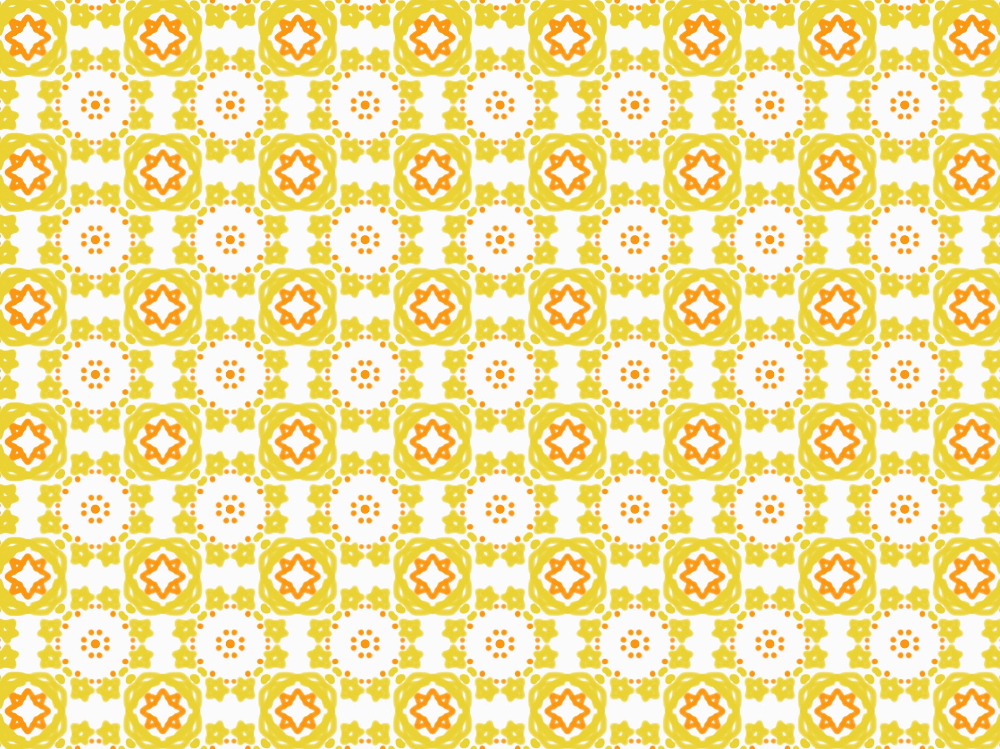
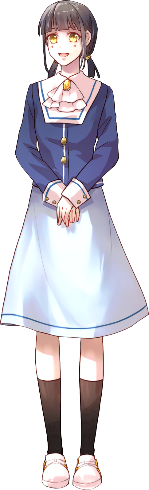

「──また、一緒に行こうね……！
甘味処！」
| 年齢 | 16歳 |
|---|---|
| 誕生日 | 6月13日 |
| 職業 | 学生（高校2年生） |
| 身長 | 156cm |
| 出身 | 神奈川県横浜市 |
| 趣味・特技 | 読書・料理 |
| 家族構成 | 父・母・弟 |
| イメージカラー | 卵色（たまごいろ） |
めぐみ溺愛の親友。
純真で誰からも愛されるタイプだが、
少し恥ずかしがり屋な一面もある。
読書が好きで、
高校では図書委員に所属している。
料理全般も得意。
最近は、
放課後にめぐみと和菓子屋に
甘味を食べに出かけることを楽しみにしている。